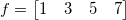
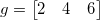
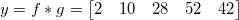
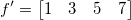

Die Entfaltung ist ein Prozess, der die Wirkung der Faltung rückgängig macht. Normalerweise wird sie dafür verwendet, ein Signal von einer bekannten Faltung mit einer bekannten Antwort wiederherzustellen.
Wenn das ursprüngliche Signal beispielsweise Folgendes ist
 ,
und die Antwort ist

dann ist ihre lineare Faltung

Wenn wir nur g und y kennen und f wiederherstellen möchten, kann eine Entfaltung verwendet werden.
Nach der Berechnung haben wir

Die Entfaltung ist entweder linear oder zirkulär. Um das ursprüngliche Signal korrekt wiederherzustellen, sollte die Entfaltung vom gleichen Typ wie die Faltung sein, die das Eingabesignal ursprünglich erzeugt hat.
|
Hinweis: Es gibt keine Garantie, dass die Entfaltung den ursprünglichen Datensatz in der Praxis immer wiederherstellen kann, da die Entfaltung sehr rauschempfindlich und nicht sehr robust ist. Außerdem kann das Entfalten des Eingabesignals mit der gleichen Antwort nicht unbedingt die ursprünglichen Daten wiederherstellen, wenn die Faltung mit der verpackten Antwort durchgeführt wird, auch wenn die Option Antwort verpacken (Umhüllungsantwort) im Dialog Entfaltung aktiviert ist. |
Um Entfaltung zu verwenden:
deconv -d
|
Themen, die in diesem Abschnitt behandelt werden: |